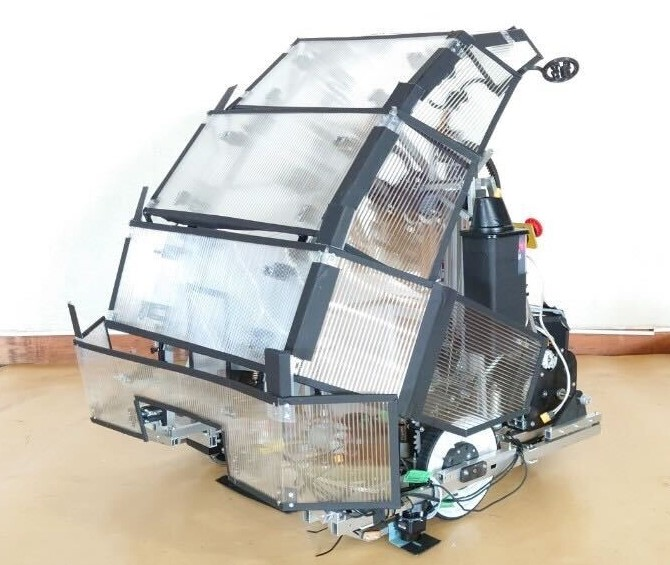

アイデア対決・全国高等専門学校ロボットコンテスト（高専ロボコン）とは、毎年異なる競技課題に対して、アイデアを駆使したロボットを製作し、競技を通じてその成果を競うものです 2023年度の競技課題は、「もぎもぎ！フルーツGOラウンド」で、制限時間以内にロボットが障害物を乗り越え高所に配置されたフルーツに見立てたカラーボールを回収し、そのポイントを競う対戦形式の競技でした。 私たちのチームは、最高ポイント800点の半分以上である401点をでとることをコンセプトにロボット製作を行いました。 その中でも私は、床に落ちたフルーツを回収する機構を担当し、結果として全国優勝を果たすことができました！
また、2023年度はろぼっと倶楽部の会計を担当し、約100万円ほどのお金の管理を行いました。
